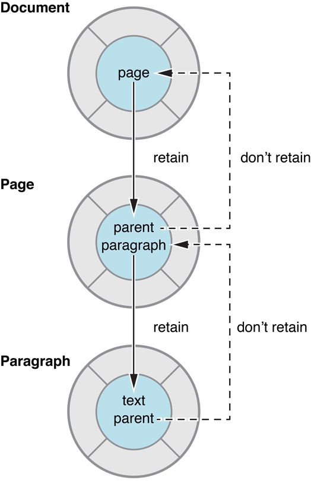

实用的内存管理
大家好，本文是文档翻译计划的第 03 篇，原文是：Practical Memory Management
尽管内存管理原则中描述的基本概念很简单，但是您可以采取一些实用的步骤来简化内存管理，并帮助确保您的程序保持可靠和健壮，同时最小化它的资源需求。
使用访问器让内存管理更容易
如果类里有个属性对象，必须要确保在使用它的时候不被释放。因此，在设置对象时，必须要让其引用计数加一。还必须要把当前引用的对象的引用计数减一。
有时候，可能看起来很单调乏味，但如果始终如一地使用访问器，内存管理出现问题的几率就会大大降低。如果在整个代码中对实例变量使用 retain 和 release，那么几乎可以肯定是在做错误的事情。
[译者注] 英文文档还是尽量意译，不然翻译过来不像是人读的话。。上面提到的「访问器」其实就是普通的 getter、setter。内存管理本质上是引用计数管理，所以本文及以后的翻译尽量都用「引用计数」这个词，而不是所谓的「持有/拥有」、「释放/放弃」。
比如要给 Counter 这个类设置一个 count 属性。
@interface Counter : NSObject
@property (nonatomic, retain) NSNumber *count;
@end;
属性声明了两个访问器方法。通常，您应该要求编译器来合成这些方法，但是，看看如何实现它们是有意义的。
在“get”访问器中，你只需返回合成的实例变量，因此不需要 retain 或 release。
- (NSNumber *)count {
return _count;
}
在“set”方法中，如果其他所有人都遵循相同的规则，那么其他人很可能随时让 newCount 的引用计数减一，从而导致 newCount 被释放，所以你必须先通过 retain 使其引用计数加一。然后，你必须要把 _count 的引用计数减一。在 OC 中，对一个 nil 对象发消息，是被允许的，所以即使 _count 没有被设置过，对其调用 release 也没事。你必须先把 newCount 的引用计数加一，然后再把 _count 的引用计数减一，否则如果 newCount 和 _count 是同一个对象，先 release 可能会让对象立刻被释放。
- (void)setCount:(NSNumber *)newCount {
[newCount retain];
[_count release];
// Make the new assignment.
_count = newCount;
}
使用访问器方法设置属性值
假设您想实现一个重置计数器的方法。你有几个选择。第一个方法是使用 alloc 创建 NSNumber 实例，然后调用 release。
- (void)reset {
NSNumber *zero = [[NSNumber alloc] initWithInteger:0];
[self setCount:zero];
[zero release];
}
第二种方法是使用一个便利的构造函数来创建一个新的 NSNumber 对象。因此，不需要 retain 或者 release。
- (void)reset {
NSNumber *zero = [NSNumber numberWithInteger:0];
[self setCount:zero];
}
注意，两者都使用 set 访问器方法。
下面这种绕过访问器的使用方法，在一些简单的场景下也是可以的，但是几乎可以确定在某些场景一定会引发错误。（比如你忘记调用 retain 和 release）。
- (void)reset {
NSNumber *zero = [[NSNumber alloc] initWithInteger:0];
[_count release];
_count = zero;
}
还要注意，如果您使用 KVO的话，那么以这种方式更改变量是不兼容 KVO 的。
不要在 init 和 dealloc 方法中使用访问器
唯一的不能使用访问器的地方就是在 init 和 dealloc 方法中。
为了在 init 中初始化一个变量，你需要这么实现：
- init {
self = [super init];
if (self) {
_count = [[NSNumber alloc] initWithInteger:0];
}
return self;
}
如果想把变量初始化成非零值，可以这么实现：
- initWithCount:(NSNumber *)startingCount {
self = [super init];
if (self) {
_count = [startingCount copy];
}
return self;
}
由于 Counter 类有一个对象实例变量，你还必须实现 dealloc 方法。把所有实例变量的引用计数减一，并最后调用 super 方法。
- (void)dealloc {
[_count release];
[super dealloc];
}
使用弱引用来避免循环引用
对一个对象 retain，会使该对象的引用计数加一。在引用计数变为零之前，无法释放该对象。因此，如果两个对象可能有循环引用(即它们彼此有一个强引用)，那么就会出现一个称为retain cycle的问题（可能是两个对象相互引用，也可能是多个对象之间相互引用，最终形成一个环）。
图1中显示的对象关系演示了一个潜在的 retain cycle。Document 对象对文档中的每个页面都有一个 Page 对象。每个 Page 对象都有一个跟踪其所在文档的属性。如果 Document 对象有一个指向 Page 对象的强引用，而 Page 对象有一个指向 Document 对象的强引用，那么两个对象都不能被释放。在释放 Page 对象之前，Document 的引用计数不能变为零，而在释放 Document 对象之前，Page 对象不会被释放。

使用弱引用可以解决 retain cycle 的问题。弱引用是一种非拥有关系，其中源对象不保留它有引用的对象。
然而，要保持对象图完整，必须在某个地方有强引用(如果只有弱引用，那么 Page 和 Document 可能没有任何所有者，因此需要释放)。因此，Cocoa 建立了一个约定，即“父”对象应该保持对其“子”的强引用，而子对象应该对其父对象有弱引用。
因此，在图1中，Document 对象有一个对其 Page 对象的强引用(retain)，而 Page 对象有一个对 Document 对象的弱引用(不retain)。
Cocoa中的弱引用示例包括(但不限于)table data sources、outline view items、notification observers 以及 miscellaneous targets and delegates。
将消息发送给仅持有弱引用的对象时要特别小心。如果在对象被释放后向其发送消息，则应用程序会 crash。你必须定义好什么时候对象是有效的。在大多数情况下，被弱引用对象知道另一个对象对它有弱引用，就像循环引用一样，负责在自己被释放的时候通知通过弱引用持有自己的对象。例如，当您向通知中心注册一个对象时，通知中心将存储对该对象的弱引用，并在发布适当的通知时向其发送消息。当对象被释放时，您需要将其从通知中心注销，以防止通知中心向对象发送任何其他消息，因为对象已不再存在。同样，当 delegate 对象被解除分配时，您需要通过向另一个对象发送带有 nil 参数的 setDelegate: 消息来删除delegate连接。通常在对象的 dealloc 方法中做这个事情。
避免正在使用的对象被释放
Cocoa 的引用策略指定接通过函数传入的对象通常在调用方法的范围内保持有效。也可以返回通过函数参数传递的对象，而不必担心它被释放。对于应用程序来说，对象的 getter 方法是否返回缓存的实例变量或计算值并不重要。重要的是，对象在您需要它的时候保持有效。
这个规则偶尔也有例外，主要分为两类。
- 从基本集合类之一中删除对象时
heisenObject = [array objectAtIndex:n];
[array removeObjectAtIndex:n];
// heisenObject could now be invalid.
当一个对象从一个基本集合类中移除时，它将被发送一个release(而不是autorelease)消息。如果集合是被删除对象的唯一所有者，则立即释放被删除的对象(本例中的heisenObject)。
- 当“父对象”被释放时
id parent = <#create a parent object#>;
// ...
heisenObject = [parent child] ;
[parent release]; // Or, for example: self.parent = nil;
// heisenObject could now be invalid.
在某些情况下，您从另一个对象获取一个对象，然后直接或间接地释放父对象。如果释放父对象导致它被释放，而父对象是子对象的唯一所有者，那么子对象(本例中的heisenObject)将同时被释放(假设它是在父对象的dealloc方法中被发送的是一个release而不是一个autorelease消息)。
为了防止这些情况，您在接收heisenObject时引用它，并在使用完它时释放它。例如:
heisenObject = [[array objectAtIndex:n] retain];
[array removeObjectAtIndex:n];
// Use heisenObject...
[heisenObject release];
不要使用dealloc来管理稀缺资源
通常不要在 dealloc 方法中管理稀缺资源，比如文件描述符、网络连接和缓冲区或缓存。特别是，您不应该设计类进而在期望 dealloc 方法会在你期望的时机被调用。dealloc 的调用可能会被延迟或未调用，可能是 bug 引起的，也可能是应用程序崩溃引起的。
相反，如果您有一个类，它的实例管理稀缺资源，那么您应该设计您的应用程序，使您知道什么时候不再需要这些资源，然后可以告诉实例清理稀缺资源。您通常会随后释放实例，dealloc 也会随之被调用。如果这个类的 dealloc 方法没有被及时调用，您也不会遇到稀缺资源不被及时释放的问题。
如果您试图在 dealloc 中管理资源管理，可能会出现问题。例如:
- 依赖对象图的释放机制
对象图的释放机制是无序的。尽管通常你希望可以按照特定的顺序释放，但是会让程序变得很脆弱。如果一个对象是 autorelease 而非 release，对象释放顺序将会被改变，这可能会引发意料之外的问题。
- 稀缺资源不被及时释放
内存泄漏是应该修复的bug，但通常不会立即变得很严重。然而，如果稀有资源没有在你期望它们被释放的时候被释放，你可能会遇到更严重的问题。例如，如果您的应用程序耗尽了文件描述符，用户可能无法保存数据。
- 清除逻辑在错误的线程中执行
如果一个对象在一个意外的时间调用了 autorelease，则会在所在线程的自动释放池结束的时候被释放。只能从一个线程访问的资源来说，这可能是致命的。
[译者注] 所谓稀缺资源，主要是一些系统资源，不能像创建一个普通对象那样轻松，在数量上和条件上都会有限制。所以不能依赖对象的 dealloc 方法，因为对象可能被泄漏，进而引发稀有资源的泄漏问题，同时也会涉及一些线程问题等等。正确的做法是涉及一个专门的类，通过这个类和稀有资源交互，然后通过这个类管理和释放稀有资源。
集合拥有它们所包含的对象
当您将对象添加到集合(例如数组、字典或集合)时，集合拥有该对象的所有权。当对象从集合中移除或集合本身被释放时，集合将放弃所有权。因此，例如，如果你想创建一个数字数组，你可以做以下任何一种:
NSMutableArray *array = <#Get a mutable array#>;
NSUInteger i;
// ...
for (i = 0; i < 10; i++) {
NSNumber *convenienceNumber = [NSNumber numberWithInteger:i];
[array addObject:convenienceNumber];
}
在上面这个例子中，你没有调用 alloc，所以也就不用调用 release。addObject 时，array 会 retain convenienceNumber。
NSMutableArray *array = <#Get a mutable array#>;
NSUInteger i;
// ...
for (i = 0; i < 10; i++) {
NSNumber *allocedNumber = [[NSNumber alloc] initWithInteger:i];
[array addObject:allocedNumber];
[allocedNumber release];
}
在这种情况下，您需要在 for 循环的范围内发送给 allocedNumber 一个 release 消息来抵消 alloc 增加的引用计数。由于数组在 addObject: 时 retain 了数字，所以在数组中它不会被释放。
要理解这一点，可以站在实集合类的人的角度。你要确保集合里的对象都不会被释放，所以当它们被传递进来时，你要向它们发送一条 retain 消息。如果它们被删除，您必须发送一个 release 消息，并且在自己的 dealloc 方法期间，任何未被 remove 的对象都应该被发送一个 release 消息。
使用引用计数来实现持有策略
引用计数也就是 retain count，每个对象都会有自己的引用计数。
- 当你创建一个对象是，它的引用计数为1
- 当你调用对象的 retain 方法时，它的引用计数+1
- 当你调用对象的 release 方法时，它的引用计数-1
- 当你调用对象的 autorelease 方法时，在当前的自动释放池结束的时候，它的引用计数-1
- 如果一个对象的引用计数变成0，则会被立刻释放
重要：不要显式地询问一个对象的 retain count 是多少(参见retainCount)。结果往往会产生误导，因为您可能不知道哪些系统逻辑引用了这个对象。在调试内存管理问题时，您应该只关心确保代码符合内存管理原则。
[译者注] 内存管理的本质是引用计数的管理。对一个对象发送 retain 消息，其引用计数+1，发送 release 消息，引用计数-1，当引用计数为0时对象被自动释放。由于这个规则足够的简单，所以要规定统一的规则。整体原则是「谁retain谁负责release」。只有约定好这种关系，才能避免内存管理问题。我觉得是引用计数本身足够简单，简单到有明显的缺陷。比如我们完全可以对一个对象发送一个 retain 消息，但是发送两次 release 消息。这样一来就乱套了，所以才需要规定如此繁多的逻辑，而且全靠开发者的个人素养，并没有机制能保证彻底避免内存问题。相比之下，Java程序员就幸福很多。
转载请注明出处：实用的内存管理 - 专业点
欢迎关注我的公众号

推荐

公众号推荐
欢迎关注我的公众号一起愉快的交流。